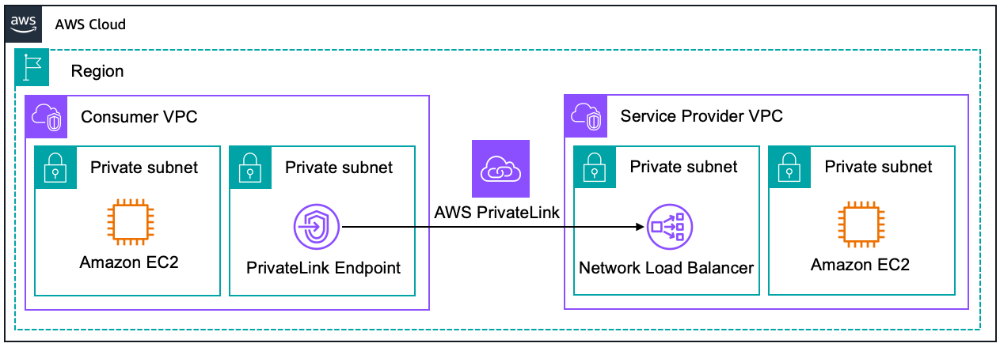
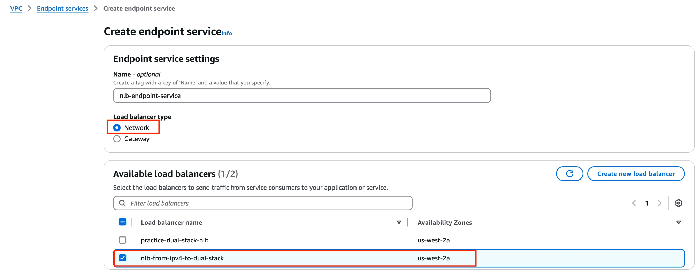
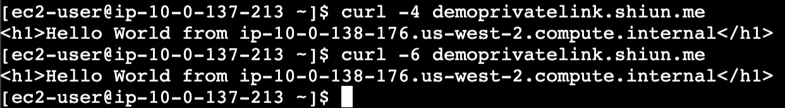

在前一篇教學中 如何將現有 NLB IPv4-only 架構升級為 Dual-stack，我們已經配置好一個支援 Dual-stack 的 NLB 了。
現在假設有一個需求：「客戶需要調用我們的 API，且他們也使用 AWS。」有沒有辦法不經過 Internet，而是直接透過 AWS 的骨幹網路 (Backbone)，將流量送到我們的 NLB？同時避免使用 VPC Peering 或 Transit Gateway，確保網路不完全打通，以降低潛在風險，例如資料洩漏或不必要的安全隱患。
答案就是 PrivateLink

什麼是 PrivateLink？
AWS PrivateLink 是一種安全的網路技術，允許服務提供者 (Service Provider) 將他們的服務透過 VPC Endpoint 暴露給使用者 (Service Consumer)，而不需要將流量經過公網 (Internet)。它能確保所有流量都在 AWS 的骨幹網路內部傳輸，提供高安全性、低延遲的解決方案。
PrivateLink 的核心特點:
- 避免暴露服務到公網： Service Provider 的服務不需要有 Public IP，Consumer 可以透過 Private IP 訪問這些服務。
- 簡化網路架構： 無需設定 VPC Peering、Transit Gateway，所以不用擔心整個網路打通的安全風險。
- 跨帳號支持： Service Provider 和 Consumer 可以位於不同 AWS 帳號，甚至不同 AWS 組織。
- 多 Region 支持： PrivateLink 現在也支援跨區域的流量傳輸 (需額外配置)。(Reference)
- 可以自定義的 Private DNS name： Consumer 可以直接使用 Service Provider 提供的 Private DNS Name 調用服務。
Terminology
- Service Consumer:
使用服務的一方。Consumer 會在自己的 VPC 中建立 VPC Interface Endpoint 來連接到 Provider 的 Endpoint service。Consumer 必須等待 Provider 接受連接請求後，才能開始使用服務。透過這種方式，Consumer 可以安全地存取 Provider 的服務，而無需經過公有網路。
- Endpoint: VPC Interface Endpoint (VPCE) 是一個彈性網路介面，具有私有 IP 位址。它作為進入 AWS 服務的進入點，讓 VPC 中的資源可以私密地存取這些服務。在 PrivateLink 架構中，這是 Consumer 端建立的元件。
- Service Provider:
提供服務的一方。Provider 需要建立 Endpoint service 並將其與 NLB 或是 GWLB 關聯，然後可以選擇性地允許哪些 AWS 帳戶可以連接到此服務。Provider 負責接受或拒絕來自 Consumer 的連接請求。
- Endpoint service: Endpoint service 是由 Service Provider 建立的服務，可以與 Network Load Balancer (NLB) 或是 Gateway Load Balancer (GWLB) 關聯。這個服務允許其他 AWS 帳戶 (Consumer) 通過 VPC Interface Endpoint 連接到 Provider 的服務。
Section 1: 配置 PrivateLink
Step 1: [Provider] 創建 Endpoint service
在 Section 1 - Step 1，我們要扮演 Service Provider，我們是提供 Service 的人。
進入 VPC 頁面 > 左側欄 Endpoint services:
- 點擊 Create endpoint service
![[Provider] Create endpoint service](image%201.png)
進入 Create endpoint service 頁面後，請依照以下內容進行配置：
- Load balancer type: Network
- Available load balancers: 選擇你的 NLB
其他部分可以保持預設

創建好後，複製 Service name
![[Provider] Copy service name](image%202.png)
Step 2: [Consumer] 創建 VPC Interface Endpoint (VPCE)
現在我們的身份切換至 Consumer
身為 Consumer，我們需要建立一個 VPC Interface Endpoint (VPCE)，透過 VPCE 存取到 Service Provider 的服務。
進入 VPC 頁面 > 左側欄 Endpoints:
- 點擊 Create endpoint
![[Consumer] Create endpoint](image%203.png)
創建 VPC Interface Endpoint，請依照以下內容進行配置：
- Type: Endpoint services that use NLBs and GWLBs
- Service name: 貼上剛才在 Service Provider 那邊所複製的 Service name
![[Consumer] Create VPC Interface Endpoint configuration](image%204.png)
創建好 VPC Interface Endpoint 之後，身為 Consumer，其實還不能馬上存取 Service，必須等待 Provider 接受你的連線請求才可以使用。
Step 3: [Provider] 接受 Connection Request
身份切回 Service Provider
回到 VPC 頁面 > 左側欄 Endpoint services:
- 勾選 Endpoint service
- 進入 Endpoint connections 頁籤
- 勾選 Endpoint connection
- 展開 Actions menu
- 點擊 Accept endpoint connection request
![[Provider] Accept endpoint connection request](image%205.png)
Step 4: [Consumer] 測試是否可以透過 VPC Interface Endpoint 調用到 NLB
身份切回 Consumer
剛才 Provider 已經接受連線了，回到 VPC > 左側欄 Endpoint 頁面，檢查一下目前 Endpoint 的 Status：
-
他會停在 Pending 狀態一下下，大概 1~2 分鐘，等到變成 Available 就 OK 囉！如下圖紅框處所示：
![[Consumer] Waiting for endpoint status to be available](image%206.png)
現在 Endpoint Status 已經是 Available 狀態，要測試是否能透過 VPC Interface Endpoint 調用到 Service Provider 的 NLB，首先要先複製 VPC Interface Endpoint 的 DNS name
![[Consumer] Copy VPC Interface Endpoint DNS name](image%207.png)
你會注意到 DNS names 提供了兩個 Domain name，下面沒有被紅框框起來的是 Zonal DNS name，使用 Zonal DNS name 可以保證你的流量一定打到你要的 AZ 關於 AZ 這方面有一個注意事項，可以參考我的 Notion 筆記: 你知道嗎？此 AZ 非彼 AZ
我現在在 Consumer AWS 帳號，透過一台跳板機 SSH 連線到 Private subnet 裡面的一台 Instance
成功連線後，輸入以下指令來存取 VPCE，請務必注意： curl 後面實際值換成你剛才複製的 VPC Interface Endpoint DNS name：
$ curl vpce-0d3d9cfb73e4becfd-iiv45fgg.vpce-svc-0ceb593b3ba202634.us-west-2.vpce.amazonaws.com
<h1>Hello World from ip-10-0-138-176.us-west-2.compute.internal</h1>
注意： 如果發現沒有得到任何 Response，請記得檢查 Security Group 設定，確保 VPC Interface Endpoint 的 SG Inbound rule 允許 EC2 流量進入，詳細請見：Troubleshooting - 配置 VPC Interface Endpoint 的 SG。
透過上面的輸出，這樣就達成「完全不透過 Internet 就打流量到 NLB」的架構囉！流量都是在 AWS Backbone 網路中內傳輸。
注意： VPC Interface Endpoint 和 我連線進去的 EC2 Instance 都放在 Private subnet，我也沒配置 NAT 或是 EIGW，所以他們是不可能有辦法連到網路的
以下簡單證明沒有連網能力，我先 ping google.com 再 curl VPC Interface Endpoint
![[Consumer] This consumer instance doesn’t have internet connectivity](image%208.png)
恭喜！我們已經成功配置好 PrivateLink 囉！
Section 2: Dual-stack
在 Section 2，將帶大家實現 Dual-stack PrivateLink，讓 Consumer 以及 Provider，同時都可以支持 IPv4 和 IPv6
Step 1: [Provider] 為 Endpoint Service 開啟 IPv6 Support
目前身份是 Service Provider
因為當初創建 Endpoint Service 時，沒勾選 IPv6 support，可以觀察下圖的 Supported IP address type 中僅顯示 IPv4 ，所以用 IPv6 流量打過去會無法解析：
![[Provider] This Endpoint service does not support IPv6 address type](image%209.png)
以下範例是以 Consumer 身份連線進去 Private Instance，利用 curl -6 調用 VPC Interface Endpoint 所得到的輸出：
$curl -6 vpce-0d3d9cfb73e4becfd-iiv45fgg.vpce-svc-0ceb593b3ba202634.us-west-2.vpce.amazonaws.com
curl: (6) Could not resolve host: vpce-0d3d9cfb73e4becfd-iiv45fgg.vpce-svc-0ceb593b3ba202634.us-west-2.vpce.amazonaws.com
OK，上面只是做個範例，讓大家知道現在真的無法用 IPv6 Client 去存取 Endpoint，讓我們再次回到 Provider AWS 帳號，進入 VPC 頁面 > 左側欄 Endpoint services:
- 選取 Endpoint service
- 展開 Actions menu
- 點擊 Modify supported IP address types
![[Provider] Modify supported IP address types](image%2010.png)
在 Supported IP address types 下方選項把 IPv6 也勾選起來：
![[Provider] Enable IPv6 address type](image%2011.png)
Step 2: [Consumer] 使 VPC Interface Endpoint 支持 Dual-stack
目前身份是 Consumer
接下來我們也要確保 Consumer 這裡的 VPC Interface Endpoint 也支持 Dual-stack，因此要記住！並不是 Provider 將 Supported IP address types 下的 IPv4, IPv6 都啟用後 Consumer 這裡就可以什麼事都不用做就可以用 IPv6 Client 去調用喔，畢竟在 Consumer 這裡，面對的是自己的 “VPC Interface Endpoint”
進入 VPC > 左側欄 Endpoints
- 選取 Endpoint
- 展開 Actions menu
- 點擊 Modify endpoint settings
![[Consumer] Modify endpoint settings](image%2012.png)
進入 Modify endpoint settings 頁面：
- IP address type: Dualstack
- DNS options: Dualstack
![[Consumer] Enable dual-stack support](image%2013.png)
Save 之後 Endpoint 會進入 Pending 狀態，要等 1~2 分鐘直到它變成 Available 狀態
當 Endpoint 狀態變成 Available 後，SSH 連線 EC2 Instance 再來測試一次吧：
$ curl -6 vpce-0d3d9cfb73e4becfd-iiv45fgg.vpce-svc-0ceb593b3ba202634.us-west-2.vpce.amazonaws.com
<h1>Hello World from ip-10-0-138-176.us-west-2.compute.internal</h1>
補充資訊：我這邊剛好沒 Clear CLI，所以可以看到設定成 Dualstack 的前後變化，一開始還無法解析成功，經過上面的重新設定，就成功使用 IPv6 Client 去打流量到 VPC Interface Endpoint 碰到 NLB 唷

恭喜，我們這樣就完成 Dual-stack PrivateLink!
Section 3: Private DNS name
Private DNS name 是一個很方便的功能，如果你是 Service Provider，想要配置 Private DNS Name 你必須擁有域名，例如: Private DNS name 設定為 example.com 的話，經過 DNS 驗證之後，Consumer 端之後就可以直接用 example.com 來存取這個 Endpoint Service
官方文件： Manage DNS names for VPC endpoint services - Amazon Virtual Private Cloud
因為我自己有域名，這裡我就用我自己的域名 (shiun.me) 來示範
Step 1: [Provider] Endpoint Service 設定 Private DNS name
![[Provider] The endpoint service does not support Private DNS name](image%2015.png)
進入 VPC > 左側欄 Endpoint services:
- 選取 Endpoint service
- 展開 Actions menu
- 點擊 Modify private DNS name
![[Provider] Modify private DNS name](image%2016.png)
配置 Private DNS name:
- 勾選 Associate a private DNS name with the service
- 輸入 Private DNS name: 我輸入
demoprivatelink.shiun.me(請依照你自己擁有的域名自由修改這邊的值)
![[Provider] Set up Private DNS name](image%2017.png)
Step 2: [Provider] 域名驗證
創建好之後，Domain verification status 會顯示 Pending verification， 這時候我就要根據指示創建一個 TXT Record 證明這個 shiun.me 域名歸你所管，我們可以從 Endpoint service detail 找到 創建 Record 時所需要設定的值，如下圖紅框所示
![[Provider] DNS verification details](image%2018.png)
所以我打開我的 DNS 服務配置 TXT Record
注意： 下面截圖的畫面，你不見得會跟我一樣 也許你是用 Route53 也許你是用其他域名註冊商本身自己提供的 DNS 服務
![[Provider] Create a TXT Record for DNS verification](image%2019.png)
創建完 TXT Record 之後，可能要稍待幾分鐘 (例如 5 mins)，等待 DNS Propagation。
我等了大概 5 mins，回到 VPC 頁面 > 左側欄 Endpoint services:
- 選取 Endpoint Service
- 展開 Actions menu
- 點擊 Verify domain ownership for private DNS name
![[Provider] Verify domain ownership for private DNS name](image%2020.png)
這時候再等一下下，約一分鐘，重新整理一下頁面，就會看到 Domain verification status 變成 Verified，如果發現還沒 Verified的話，請你：
- 再次檢查 DNS Record 是否有配置錯誤 (Type, value… 等)
- 再次稍等一下下，可以用
dig TXT <domain>來檢查看看 Answer 是否配置正確 - 重新 Verify domain ownership for private DNS name
![[Provider] Checking the Domain Verification status shows it is verified](image%2021.png)
Step 3: [Consumer] VPC Interface Endpoint 啟用 Private DNS name
目前身份是 Consumer
同理，身為 Consumer 這方，VPC Interface Endpoint 這裡也需要啟用 Private DNS name 的支持，可以看到下圖紅框處，Private DNS name enabled 顯示 No，表示目前還尚未啟用此功能
![[Consumer] The VPC Interface endpoint does not support Private DNS name](image%2022.png)
進入 VPC > 左側欄 Endpoints:
- 選取 Endpoint
- 展開 Actions menu
- 點擊 Modify private DNS name
![[Consumer] Modify private DNS name](image%2023.png)
在 Modify private DNS name settings section 中，勾選 Enable for this endpoint
![[Consumer] Enable private DNS name for this endpoint](image%2024.png)
Save 之後，會變成 Pending 狀態
直到它變成 Available 後，我們再次 SSH 連線到 Private Subnet 的 EC2 Instance
curl -4 範例輸出：
$ curl -4 demoprivatelink.shiun.me
<h1>Hello World from ip-10-0-138-176.us-west-2.compute.internal</h1>
curl -6 範例輸出：
$ curl -6 demoprivatelink.shiun.me
<h1>Hello World from ip-10-0-138-176.us-west-2.compute.internal</h1>
下圖為 Private Instance 使用 curl 指令分別用 IPv4 和 IPv6 Client 調用 Private DNS name 的執行結果截圖：

從上面的結果可以看到，我們成功使用 Private DNS name 來存取 Service Provider 的 NLB 囉
這裡還可以做一個小實驗，我用自己的筆電打開 Terminal (不是 AWS 上 Consumer VPC 裡面的 EC2 instance 唷)，調用 curl 看看:
$ curl -4 demoprivatelink.shiun.me
curl: (6) Could not resolve host: demoprivatelink.shiun.me
$ curl -6 demoprivatelink.shiun.me
curl: (6) Could not resolve host: demoprivatelink.shiun.me
下圖為我在自己筆電上執行的結果截圖：

我用自己筆電執行的結果是想告訴讀者，PrivateLink 很安全又好用！我們在 AWS 環境外面是真的沒辦法調用到 Endpoint service 唷
補充 - 透過 PrivateLink 訪問 NLB，那 Service Provider 看得到 Client 原始 IP 地址嗎？
首先，身為 Consumer 是透過 VPC Interface Endpoint 去訪問到 NLB 的，我已經找到 VPC Interface Endpoint 的 IP 地址如下:
- IPv4:
10.0.133.54 - IPv6:
2600:1f14:3231:3002:d93:b5b3:d78c:2e0a
下圖紅框處為 Consumer 那邊的 VPC Interface Endpoint IPv4 和 IPv6 地址：
![[Consumer] VPC Interface Endpoint IPv4 and IPv6 addresses](image%2026.png)
現在我們就來打流量看看吧
在 Consumer 這方，我總共輸入了以下指令，也得到相應的 Response:
[ec2-user@ip-10-0-137-213 ~]$ curl -4 vpce-0d3d9cfb73e4becfd-iiv45fgg.vpce-svc-0ceb593b3ba202634.us-west-2.vpce.amazonaws.com
<h1>Hello World from ip-10-0-138-176.us-west-2.compute.internal</h1>
[ec2-user@ip-10-0-137-213 ~]$ curl -6 vpce-0d3d9cfb73e4becfd-iiv45fgg.vpce-svc-0ceb593b3ba202634.us-west-2.vpce.amazonaws.com
<h1>Hello World from ip-10-0-138-176.us-west-2.compute.internal</h1>
[ec2-user@ip-10-0-137-213 ~]$ curl -4 demoprivatelink.shiun.me
<h1>Hello World from ip-10-0-138-176.us-west-2.compute.internal</h1>
[ec2-user@ip-10-0-137-213 ~]$ curl -6 demoprivatelink.shiun.me
<h1>Hello World from ip-10-0-138-176.us-west-2.compute.internal</h1>
回到 Service Provider 那邊，我已經有去找到 NLB ENI，其 IPv6 地址為: 2600:1f14:2549:300:17c1:6c5d:ba29:ce1
我在 Provider 這邊，透過跳板機 SSH 連線到 NLB 背後的 Target Instance 來觀察 Httpd access logs:
2600:1f14:2549:300:17c1:6c5d:ba29:ce1 - - [08/Jan/2025:04:31:12 +0000] "GET / HTTP/1.1" 200 69 "-" "curl/8.5.0"
2600:1f14:2549:300:17c1:6c5d:ba29:ce1 - - [08/Jan/2025:04:31:12 +0000] "GET / HTTP/1.0" 200 69 "-" "curl/7.88.1"
2600:1f14:2549:300:17c1:6c5d:ba29:ce1 - - [08/Jan/2025:04:31:13 +0000] "GET / HTTP/1.1" 200 69 "-" "curl/8.5.0"
2600:1f14:2549:300:7935:fbac:a7b4:84d5 - - [08/Jan/2025:04:31:16 +0000] "GET / HTTP/1.1" 200 69 "-" "ELB-HealthChecker/2.0"
2600:1f14:2549:300:17c1:6c5d:ba29:ce1 - - [08/Jan/2025:04:31:18 +0000] "GET / HTTP/1.1" 200 69 "-" "curl/8.5.0"
2600:1f14:2549:300:17c1:6c5d:ba29:ce1 - - [08/Jan/2025:04:31:24 +0000] "GET / HTTP/1.1" 200 69 "-" "curl/8.5.0"
可以注意到來源地址都是 NLB 的 IPv6 address！
也就是說，Provider 看不到真實來源 IP 地址！
那怎麼辦？我就是有一些需求需要看到真實來源 IP 地址… 那請繼續往下看，我們會需要 Proxy Protocol 的幫助！！！
那如果我現在配置了 Proxy protocol 呢？
關於配置 Httpd Proxy Protocol 支持，這裡先省略，不是本文重點，總之我已經開啟 Proxy Protocol 支持了
於是我再次回到 Consumer 的 EC2 Instance 對 VPC Interface Endpoint 發出請求
[ec2-user@ip-10-0-137-213 ~]$ curl -4 vpce-0d3d9cfb73e4becfd-iiv45fgg.vpce-svc-0ceb593b3ba202634.us-west-2.vpce.amazonaws.com
<h1>Hello World from ip-10-0-138-176.us-west-2.compute.internal</h1>
[ec2-user@ip-10-0-137-213 ~]$ curl -6 vpce-0d3d9cfb73e4becfd-iiv45fgg.vpce-svc-0ceb593b3ba202634.us-west-2.vpce.amazonaws.com
<h1>Hello World from ip-10-0-138-176.us-west-2.compute.internal</h1>
[ec2-user@ip-10-0-137-213 ~]$ curl -4 demoprivatelink.shiun.me
<h1>Hello World from ip-10-0-138-176.us-west-2.compute.internal</h1>
[ec2-user@ip-10-0-137-213 ~]$ curl -6 demoprivatelink.shiun.me
<h1>Hello World from ip-10-0-138-176.us-west-2.compute.internal</h1>
回到 Service Provider 那邊，觀察 NLB Target instance 中的 Httpd access logs:
10.0.137.213 - - [08/Jan/2025:04:37:43 +0000] "GET / HTTP/1.1" 200 69 "-" "curl/8.5.0"
2600:1f14:3231:3002:5b88:e457:66c1:43ad - - [08/Jan/2025:04:37:46 +0000] "GET / HTTP/1.1" 200 69 "-" "curl/8.5.0"
10.0.137.213 - - [08/Jan/2025:04:37:50 +0000] "GET / HTTP/1.1" 200 69 "-" "curl/8.5.0"
2600:1f14:3231:3002:5b88:e457:66c1:43ad - - [08/Jan/2025:04:37:52 +0000] "GET / HTTP/1.1" 200 69 "-" "curl/8.5.0"
下圖為 Provider 那邊的 NLB Target instance 截圖畫面：
![[Provider] The Httpd access log from the Target instance](image%2027.png)
根據上述的各個輸出結果，可以觀察到：
-
10.0.137.213確實是 Consumer Private Instance 的 Private IPv4 address -
2600:1f14:3231:3002:5b88:e457:66c1:43ad也確實是 Consumer Private Instance 的 IPv6 address -
請見下圖，這是 Consumer 那邊的 Private instance，紅框處就是該 Instance 的 IP 地址
![[Consumer] Here are the IPv4 and IPv6 addresses for the consumer’s private instance.](image%2028.png)
所以如果有啟用 Proxy Protocol 的話，是可以看到原始來源 IP 的喔！！
Troubleshooting - [Consumer] 配置 VPC Interface Endpoint 的 SG
如果你沒收到回應，你可以檢查一下 VPC Interface Endpoint 的 SG 是否配置正確，我只有配置一個 Inbound rule 允許 EC2 SG 的流量打進來，至於 Outbound rule 就不需要配置，因為 SG 是 Stateful
![[Consumer] VPC Interface Endpoint Security Group inbound rules](image%2029.png)